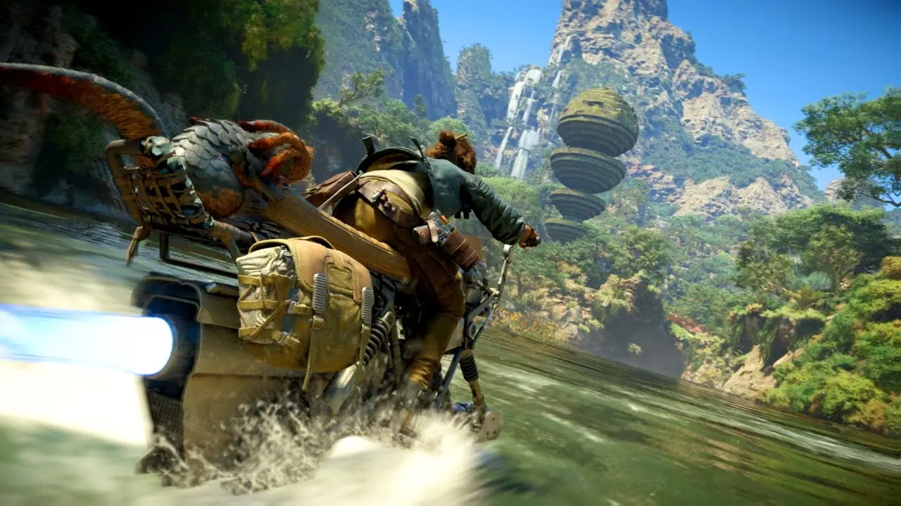
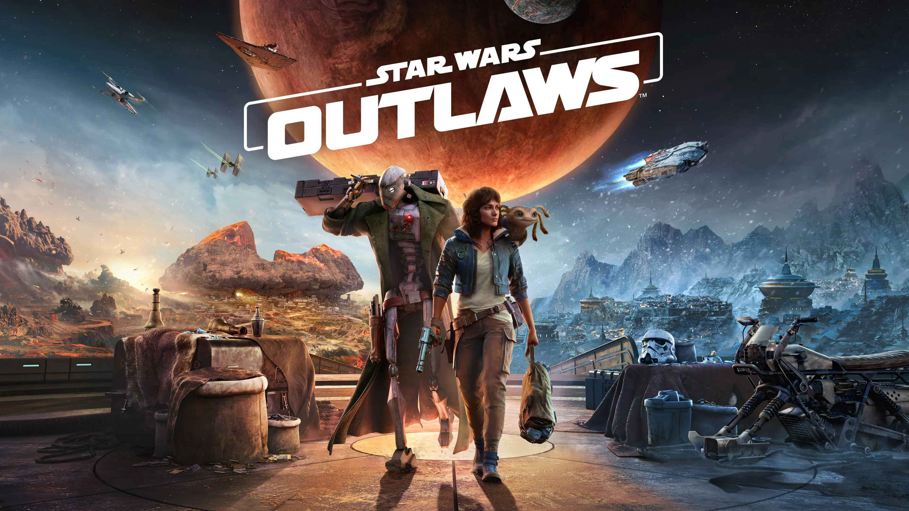
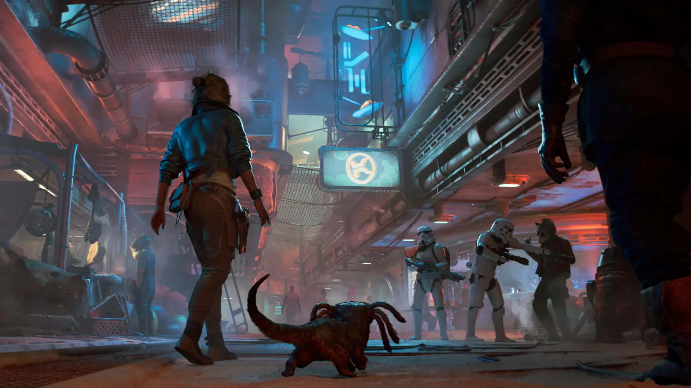

Viví la vida de una foragida
Tomá el control de Kay Vess, una ladrona novata que busca libertad y los medios para empezar una nueva vida junto a su inseparable compañero Nix.
Conocer la historia

Explorá el bajo mundo galáctico en una aventura de acción en mundo abierto ambientada entre El Imperio Contraataca y El Retorno del Jedi.

Tomá el control de Kay Vess, una ladrona novata que busca libertad y los medios para empezar una nueva vida junto a su inseparable compañero Nix.
Conocer la historiaAceptá misiones arriesgadas para los sindicatos criminales más peligrosos de la galaxia: los Pyke, el Clan Crimson Dawn y los temibles Hutt.
